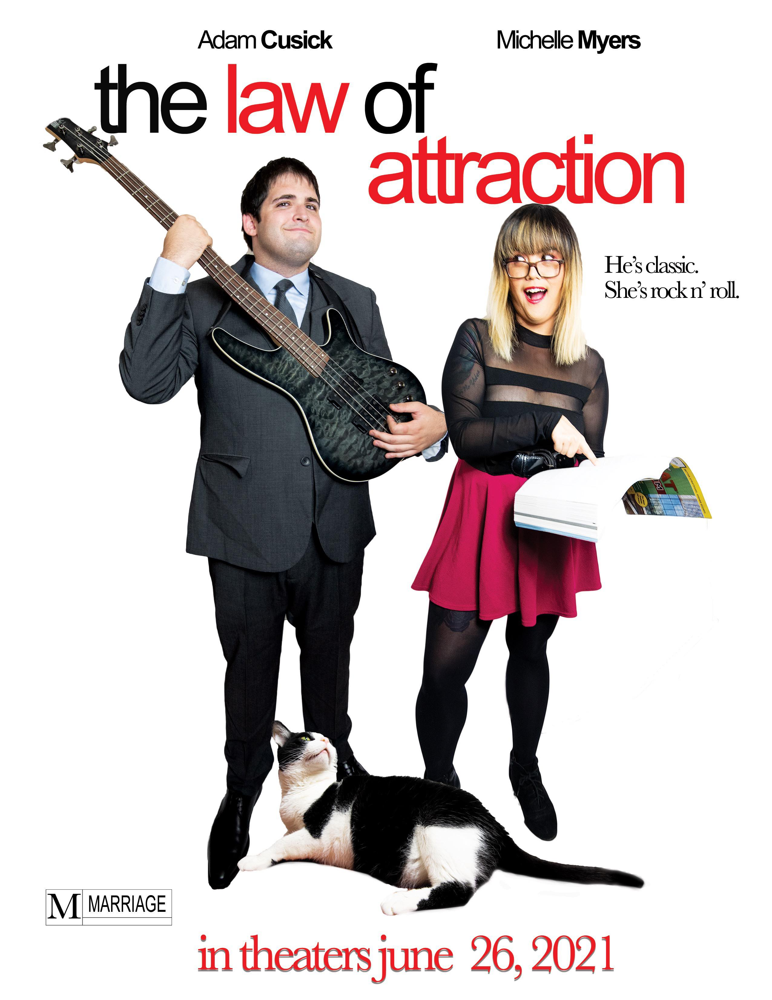
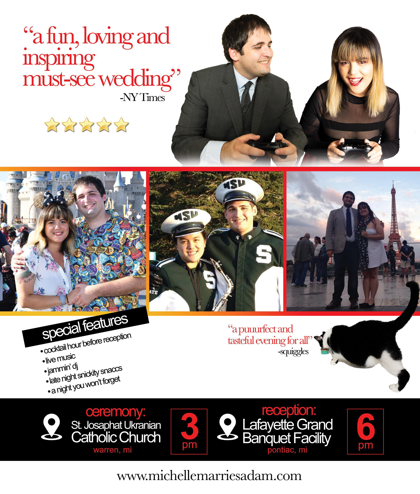

It was the end of October, 2013. Two strangers met under improbable circumstances at a Halloween party. He was an ace attorney. She was a bee. He was bored and about to leave. She was also bored, so her friend poked him in the face and introduced them. Seven and a half years later, they're (finally) getting married.
And now, Adam and Michelle invite you to share a special moment with them in this one-night-only premiere. You'll gasp in amazement at how beautiful Michelle looks in her dress in the middle of a beautiful ceremony. You'll give Adam a pity chuckle as he makes terrible wedding-themed jokes throughout the reception. You will be inspired by their love.
While the ceremony is the important part, everyone knows that the reception is the fun part. Enjoy a live jazz trio while you imbibe at the pre-reception cocktail hour. Take in the art-deco stylings of the terraced theatre-turned-hall. Enjoy a quality meal with quality company. Later on, get down to the groove of DJ Young Man Legend. Top off the night with even more food as we bring you late-night snacktion, a coffee bar, and the fabled dessert onslaught. This is a party you won't want to miss.